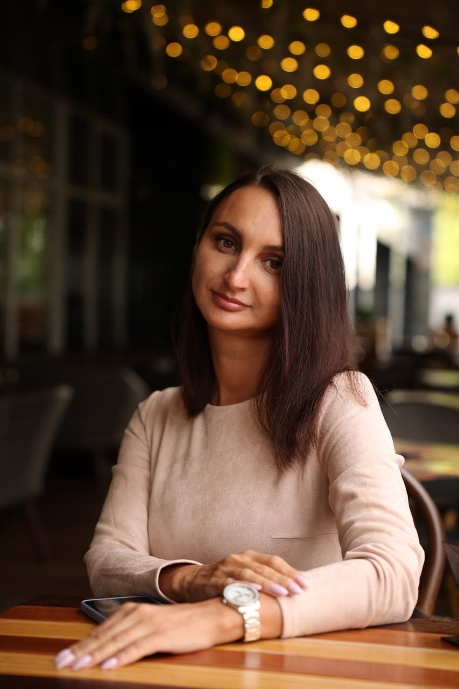

Клинический психолог · Работа с травмой и тревожными расстройствами
Из этого можно выйти. Я знаю, каково это — когда рушится мир.
Я практикующий психолог. Я знаю, каково это — когда рушится мир, когда больно, стыдно и непонятно, как жить дальше. Мой собственный опыт прохождения сложных кризисов научил меня одному: из этого можно выйти. И раз Вы на моей страничке, значит наша встреча не случайна.
Моя задача — помочь вам справиться с тяжелыми отношениями (или их последствиями) и вернуть себе себя.
Нарциссический абьюз: Помогаю распознать, что происходит, когда вы уже чувствуете усталость, стыд, тревогу и потерю себя. Разбор циклов идеализация-обесценивание, восстановление связи с реальностью, безопасное планирование разрыва.
Восстановление после отношений с нарциссом: Понимание механизмов травматической привязанности, возвращение контакта с чувствами, выход из стыда и самобвинения.
Развод. Измена. Кризис семейных отношений: Безопасное проживание боли и гнева, принятие факта завершения, переход от «мы» к «я».
Я зависим(а) от партнера: Различение любви и зависимости, возвращение границ, работа со страхом одиночества.
Мой партнер употребляет химические вещества: Принятие собственного бессилия, отделение ответственности, выстраивание границ в хаосе.
Мой партнер избегающий: Понимание динамики «тревожный-избегающий», выход из порочного круга, как оставаться в контакте без самоотмены.
У меня тревожная привязанность: Развитие внутренней опоры, работа со страхом отвержения, формирование устойчивых отношений.
Вопросы карьеры и прокрастинации: Разбор механизмов прокрастинации, отделение своих желаний от навязанных, работа со страхом оценки и внутренним критиком, восстановление способности действовать.
60 минут · работа с вашим запросом
90 минут · работа с отношениями
Глубокая проработка запроса
Кризисный психолог. Специализация: работа с травмой и тревожными расстройствами (Институт психологии).
Дополнительное образование: